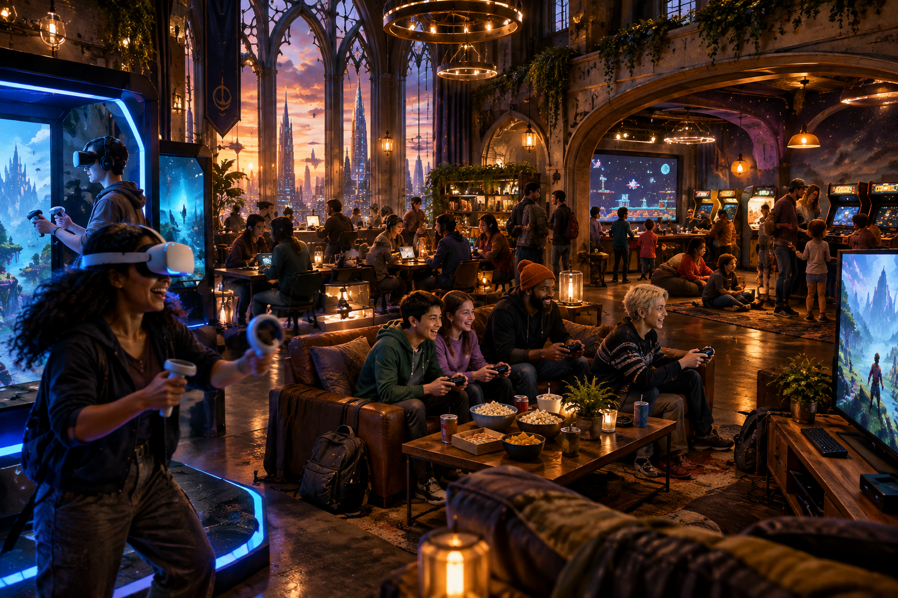
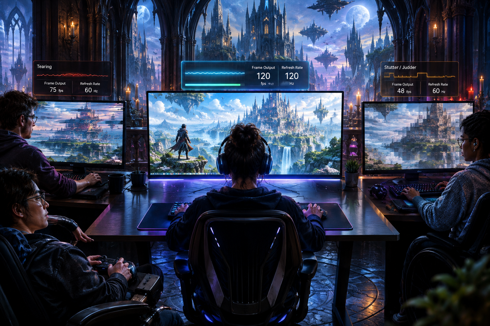
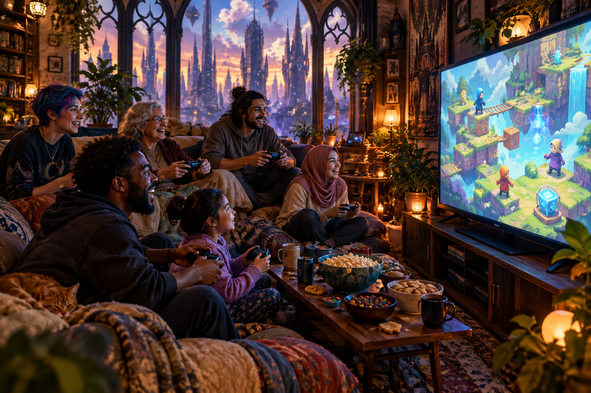

Play Spaces Reimagined: The Return of Gaming Cafés and Local Hubs in 2026
As gaming goes global and digital, a surprising revival pulses through cities and towns: the rapid return of gaming cafés and local play spaces. How are these physical hubs reconnecting players, reshaping community, and evolving gaming culture in a hyper-connected world?
READ THE STORY ↗
From Flat Screens to Fluid Worlds: How Variable Refresh Rate Tech Quietly Changed PC Gaming in 2026
Variable Refresh Rate (VRR) has become the silent hero of the PC gaming experience. We explore how VRR technologies like G-Sync, FreeSync, and HDMI 2.1 VRR are enhancing smoothness, reducing strain, and transforming expectations for gamers and developers alike.
READ THE STORY ↗
Combo Creators: How Fighting-Game Mechanics Are Revolutionizing MMORPG Combat in 2026
No longer content with tab-targeting or static rotations, the next generation of MMORPGs is borrowing heavily from the art of the brawl. Here’s how fighting-game mechanics are making online worlds more dynamic, skillful, and exhilarating than ever before.
READ THE STORY ↗Branching Minds: How Esoteric Ebb’s Questing Tree Rewrites the DNA of RPG Progression
Esoteric Ebb’s new 'Questing Tree' system blends narrative, choice, and character development into a living map of possibility, offering RPG players agency like never before. Here’s how a single design is inspiring a genre-wide rethinking of what it means to embark upon a quest.
READ THE STORY ↗
From Small Teams to Big Screens: How Indie Studios Are Transforming Console Co-Op with Bold New Ideas
Indie developers are reshaping the landscape of console cooperative gaming not just through innovation, but by refocusing on what makes playing together truly memorable. Here’s how their risk-taking and unique perspectives are bringing fresh life to co-op play in 2026.
READ THE STORY ↗